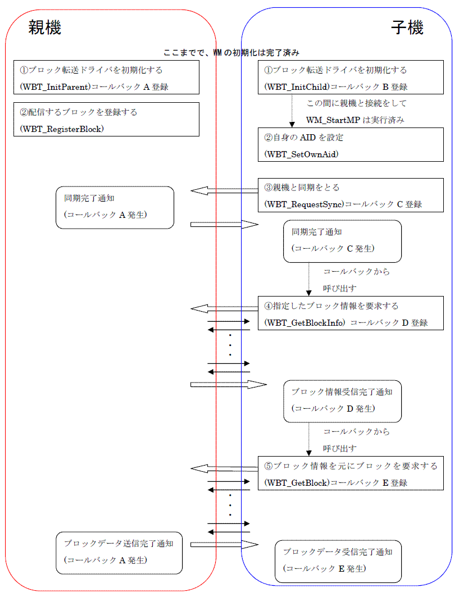

WMブロック転送プロトコル (WBT) は、MP通信上で利用するデータ転送専用のバッファ制御ライブラリです。
データサイズを気にすることなく、複数の子機に効率的にデータを配信します。
また子機から親機への転送も可能です。
WBTの使い方
WBTライブラリは、データをブロック単位に分割するプロトコルとしての機能しかなく、実際の無線送受信はおこないません。
そのため、データをやり取りする際にはWMライブラリを用いる必要があり、あらかじめMP通信をアプリケーションで実装する必要があります。
WBTライブラリは、MP通信の送受信バッファの一部 (あるいは全部) を利用して実現されます。
WBTをMP通信に連動させるには、一連のWBTライブラリの関数呼び出しの流れとは別に、MP通信の送受信処理の前後などで
WBTから送信バッファを受け取り、WBTに受信バッファを知らせる必要があります。
具体的には、「MP通信の接続が確立された(WM_StartMP( )の完了コールバック呼び出し時)」、
「MPデータ送信が完了した(WM_SetMPData( )の完了コールバック呼び出し時)」、
「MPデータ受信が完了した(WM_SetPortCallback( )で指定したコールバック呼び出し時)」
などのWMコールバック関数内で、以下のWBT関数を呼び出します。
例えば、MP通信親機においてWM_SetMPData( )の完了コールバックで、次のMP通信のためのバッファを引数に
WBT_MpParentSendHook( )を呼び出し、そのバッファをさらにWM_SetMPData( )でセットします。
data_size = WBT_MpParentSendHook(SendBuf, DATA_SIZE_MAX);
WM_SetMPData(callback, SendBuf, data_size, 0, 0xffff);
なお、これらの関数は基本的にMP通信の送受信バッファにデータを書いたり、読んだりするだけなので、
厳密にここで指定した場面で呼び出す必要はなく、次にMP通信を行う前までに呼び出してもかまいません。
なお、WBT のコマンド待ちうけキューの長さは 1 しかないため、一度に一つの WBT コマンドしか登録できません。
（WBT_RequestSync( )、WBT_GetBlockInfo( )、WBT_GetBlock( )、WBT_PutUserData( ) ）
実行した WBT コマンドが終了する前に、次の WBT コマンドを発行しても登録できないので注意が必要です。
WBTの基本的なAPI呼び出しの流れ
WBTを使用する際の起動から終了までの一連のAPI呼び出しの流れについて、以下に図として示します。

WBTの使い方の節でも述べましたが、WBTはあくまでプロトコルを提供しているだけであり、
上記の図での親機と子機を繋ぐ矢印の部分で、実際にWM_SetMPData( )等を呼ぶ必要があります。
また、MPデータ送信を行う前に、WBT_MpParentSendHook( ),WBT_MpChildSendHook( )を呼び出し、送信するバッファを得る必要があり、
MPデータ受信が完了した後に、WBT_MpParentRecvHook( ),WBT_MpChildRecvHook( )を呼び出し、受信したバッファの内容を
WBTに知らせる必要があります。
親機の処理の流れ
子機の処理の流れ
2006/03/13 初版